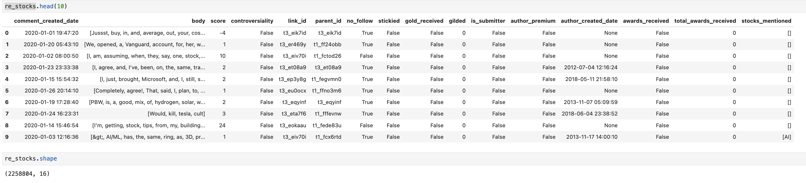

First, I check the basic information of the data such as the size of data, the NA in columns, statistical distribution of some important variables.
Second, I do data munging, creating a new dataset that only includes variables needed for analysis. Also, I try to identify stocks mentioned in each comment of Reddit.(created a new column for the mentioned stocks ).
Finally, I creates some visualizations and tables to response business questions, including what is the Top 10 stocks/industries/countries mentioned in the subreddit.
Size and selected variables in Reddit comments dataset

important variable explanation:
# link: Main post
# comment: link's comment or comments' comment
# submission: comment/link
# link_id: id of link
# parent_id: ID of the thing this comment is a reply to, either the link or a comment in it
# gild: a comment is gilded means that someone gave the poster 1 month of reddit gold for the post (indicates the comment is really good)
# total_awards_received: Redditors give each other awards as a way to recognize and react to each other’s contributions.
# controversiality: whether the comment is controversial (0 or 1)
# gilded: the number of times this comment received reddit gold
# score: upvote-downvote
# author_created_utc: date of author's account created
# created_utc: date of submission/comment created
# no follow: whether the submission is followed by others or not
# is_submitter: whether a comment author is also the author of the submission
# sticked: whether the post is sticked
Use ApeWisdom stock detection method: https://apewisdom.io/methodology/
detect Tickers in a comment or submission if they are written in uppercase letters. For example: AMD, BTC, AAPL, or if they are preceeded with a dollar sign. For example: $aapl, $AAPL, $btc.
If a ticker is present two or more times in a submission or a comment this will still be counted as a single mention.
This can lead to some issues, as there are stocks/cryptos with tickers such as CFO, or YOLO. In such case only \(CFO/\)cfo and \(yolo/\)YOLO will be counted.
users could interactive with the plot (click, zoom in/out, move mouse)
Project Starter
Step 1: Basic Information
Step 2: Data Munging
Step 3: Finding and Visualizations
Copyright © ZhibaoLi, Graduate of Data Science and Analytics, Georgetown University. All rights reserved.